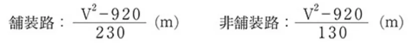

JAF国内スピード競技コースの公認に関する規定_20250401
P.1ＪＡＦ国内スピード競技コースの公認に関する規定
２００２年 ７月３１日制 定２００３年 １月 １日施 行２００４年 ３月２２日改 正
２００４年 ４月 １日施 行２００９年１１月２６日改 正２０１１年 １月 １日施 行
２０１３年 ８月 １日改 正２０１４年 １月 １日施 行２０25年 4月 １日改正施行
第１条 総 則
一般社団法人日本自動車連盟（以下「ＪＡＦ」という。）は、スピード競技の公正と安全を確保するため、国内のスピード競技コースの公認に関し、ＪＡＦ国内競技規則に基づき、本規定を定める。
第２条 公認および競技の開催
公認スピード競技に使用されるコースは、ＪＡＦの公認を必要とする。
ただし、ジムカーナとダートトライアルのクローズド競技については、公認コースの使用を推奨する。
ＪＡＦはスピード競技コースを公認する際、１級から３級までの格式を付与する。各級の開催できる競技会の内容および具備すべき要件は次の表２−１の通りである。ただし、臨時コースについては、開催できる競技会の内容および具備すべき要件について個別に審査が行われる。
表 2－1：コース格式と開催できる競技会の内容および具備すべき要件
| １級 | 準１級 | ２級 | ３級 | ||||
| コース格式と開催 できる競技会の内 容 | 開催できる競技会の格式 | 国内競技以下 | 国内競技以下 | 準国内競技以下 | 地方競技以下 | ||
| 出走可能車両クラス | ジムカーナ | P,PN,N,SA, SAX,B,AE, SC,D | P,PN,N,SA, SAX,B,AE, SC | P,PN,N,SA, SAX,B,AE, SC | P,PN,N,SA, SAX,B,AE | ||
| ダートトライア ル | P,PN,N,SA, SAX,B,AE, SC,D | － | P,PN,N,SA, SAX,B,AE, SC,D | P,PN,N,SA, SAX,B,AE | |||
| 観衆導入 | ○ | ○ | ○ | × | |||
| 安全体制 | 防護設備 消火体制 救急施設 観衆 | 第9条安全基準に合致した防護設備 第9条安全基準に従った消火体制 第9条安全基準に従った救急施設（救護室 および救急活動専用車両） 観衆に対する安全基準を満たした観衆エリ アの仕切り設備） | ○ ○ ○ ○ | ○ ○ ○ ○ | ○ ○ ○ ○ | ○ ○ ○ × | |
| 防護設備 | パドック 参加者用掲示板 駐車場 施設案内板 車検場 本部建物 審査委員会室 放送設備 放送管理 | 参加台数を収容できるパドックの設置 参加者用掲示板の設置 充分な台数を収容できる駐車場の設置 施設案内板の設置 隔離された車検場の設置 競技会の運営、管理を行うための建物の設置 審査委員会室の設置 放送設備の設置 コース施設管理責任者の選任 | ○ ○ ○ ○ ○ ○ ○ ○ ○ | ○ ○ ○ ○ ○ ○ ○ ○ ○ | ○ ○ ○ ○ × × × × × | ○ ○ × × × × × × × |
第３条 コースの種別
国内公認スピード競技コースの種別は以下の通りとする。
１．常 設：
コースの諸設備が常設で、モータースポーツに供することを主目的として開設される常時使用できるコースであって、かつ原則として競技会開催期間中以外であっても、練習走行等のモータースポーツ関連の目的に使用できる状態であること。
２．準常設：
常設の条件に準じ、部分的に恒久的な諸設備を有するコースで、モータースポーツに供することを主目的として開設されるコースではないが、当該年の国内スポーツカレンダーに登録された競技会の開催に供することが可能な
P.2状態であること。
３．臨 時：
コースおよび諸設備が臨時的で、特定の競技会に使用するために一時的に準備されるコース。
第４条 公認申請の資格
ＪＡＦにコース公認申請を行う者（以下「公認申請者」という。）の資格は、コース公認の種類により、以下の通りとする。なお公認後、公認申請者がその資格を失った場合、その時点で当該コース公認は無効となる。
１．常 設：
１）申請するコースを所有する法人・団体または当該コース運営を委任された法人・団体で、ＪＡＦ公認団体またはＪＡＦ加盟団体
２）コースの所有者から公認期間を通じ有効となる使用契約を得たＪＡＦ公認団体またはＪＡＦ加盟団体で、ＪＡ Ｆが審査し認めた者
２．準常設：
１）申請するコースを所有する法人・団体または当該コース運営を委任された法人・団体で、ＪＡＦ公認団体またはＪＡＦ加盟団体
２）コースの所有者から公認期間を通じ有効となる使用契約を得たＪＡＦ公認団体、ＪＡＦ加盟団体、ＪＡＦ公認クラブ、ＪＡＦ加盟クラブまたはＪＡＦ準加盟クラブ
３．臨 時：
１）申請するコースを所有する法人・団体または当該コース運営を委任された法人・団体で、ＪＡＦ公認団体またはＪＡＦ加盟団体
２）コースの所有者から競技会開催に必要となる期間中有効となる使用契約を得たＪＡＦ公認団体、ＪＡＦ加盟団体、ＪＡＦ公認クラブ、ＪＡＦ加盟クラブまたはＪＡＦ準加盟クラブ
第５条 公認の手続き
公認申請手続きは、以下の通りとする。
１．申請手続き
公認申請者は、所定の申請方法にて必要事項を記載し、下記の添付書類と所定の申請料を添えて競技会開催の３ヶ月前までにＪＡＦに申請すること。また、更新手続きは公認の有効期間が満了する年の１１月末日までに所定の申請方法にて必要事項を記載し、添付書類と所定の申請料を添えてＪＡＦに申請すること。
※添付書類については電子媒体にて作成したものを提出してもよい。
２．添付書類（各１部）
１）競技内容説明書：
開催を意図するスピード競技およびその参加車両区分を詳細に記入すること。なお、新規申請の場合は最初に開催を予定している公認競技会の開催日を記入すること。
２）案内図：
50,000分の１以上の正確な地図に次の事項を記入すること。
（1）コースの位置
（2）応需病院（指定の救急病院）の位置（距離および所要時間を記入）
（3）主要道路からの進入路（および／または最寄りの鉄道駅からの進入路）
３）競技コース全体図：
競技コース全体図には次の施設を明記すること。
（1）防護設備
（2）救急施設
（3）パドック
（4）参加者用掲示板
（5）観衆導入エリア（通路を含む） （２級以上）
（6）施設案内板 （２級以上）
（7）一般駐車場 （２級以上）
（8）再車検場 （１級及び準１級）
P.3（9）本部建物 （１級及び準１級）
（10）審査委員会室 （１級及び準１級）
（11）放送設備（スピーカー設置箇所）（１級及び準１級）
４）コース使用契約書写し：
コースの所有者と公認申請者が異なる場合には、申請する公認期間満了まで有効なコース使用に関する両者間の契約内容を証明する書面の写しを提出のこと。
５）その他ＪＡＦの求める資料。
第６条 コースの査察
ＪＡＦは、第９条安全基準に従い、コース査察を行い、安全事項に関する勧告指導を行う。
なお、本査察はＪＡＦがコースの安全事項について勧告指導を行う目的で実施されるものであり、査察を行ったコースにおいて事故が発生しても、ＪＡＦはなんら責任を負うものではない。
１．査察
１）義務づけられる査察
（1）ＪＡＦ公認スピード競技コースとして新規申請を行う場合。
（2）既存のＪＡＦ公認スピード競技コースで全日本選手権を開催する場合。（隔年実施）
（3）既存のＪＡＦ公認スピード競技コースでＪＡＦが必要と認めた場合。
２）臨時に行われる査察
（1）重大な事故が発生し、ＪＡＦが必要と認めた場合。
（2）公認申請者または競技会オーガナイザーより特に要請があり、ＪＡＦが必要と認めた場合。（査察にかかる費用は要請者の負担とする。）
（3）その他ＪＡＦが特に必要と認めた場合。
２．査察員
査察は、ＪＡＦが指名するＪＡＦ安全部会委員またはその他の適格者によって実施される。
３．査察立会人
査察にはコース申請者か管理人、あるいはＪＡＦが認めた代理人が立ち会わなければならない。査察中は認められた者以外の立ち会いは許されない。
４．査察項目
査察は第９条安全基準の各項目について行われる。
５．査察実施に関する確認事項
ＪＡＦは公認申請者との間で査察の日程およびその他実施に必要な事項について連絡、確認を行う。
第７条 査察報告
ＪＡＦは、査察終了後、直ちに査察報告書を公認申請者に送付する。
公認申請者は、査察報告書に記載された事項に関して、受領した日から２０日以内に意見を申し立てることができる。この期限内に意見の申し立てがない場合には、その報告書は最終のものとされ、必要とされる改修、その完成期限など、報告書に記載されている事項全てを公認申請者が受け入れたものとする。
査察報告書の内容に関してＪＡＦと公認申請者との間に見解の相違がある場合には、ＪＡＦが検討し、最終決定を行う。
第８条 許可証の発給
すべての勧告指導および最終査察報告書による必要条件を満たしているコースに対し、その時点の安全基準を公認の有効期間中継続して保持することを条件に「ＪＡＦスピード競技コース許可証」（以下「許可証」という）が発給される。
１．許可証の内容
１）コースの種別
２）公認の種別
３）有効期間
４）その他条件
P.4５）コース図
２．有効な競技種目
許可証は、当該コースに許された競技種目（ジムカーナ、ダートトライアル等）に対してのみ有効である。他のスピード競技の開催には、別途申請に基づく許可を必要とする。
３．公認の有効期間
常設および準常設コースの許可証の有効期間は、許可証発給日からその年の１２月３１日までとする。
なお、常設コースの公認の有効期間は、申請に基づき許可証発給日から翌々年の１２月３１日まで認められる。
臨時コースの公認の有効期間は、原則として当該競技会の期間中に限られる。
第９条 安全基準
１．通則
１）本基準はＪＡＦ公認のスピード競技を開催するコースとして事前に満足しておくべき条件を定めたものである。
２）ＪＡＦはコース公認にあたり本基準に従いコース査察を行い、既設のコースについては過去の運営上の経験と実績を考慮し、また新設のコースについてはそのコースの立地条件および運営のための安全面等を調査した後、代案または特例を認めることができる。
２．コースの基準
スピード競技に使用する競技コースは、競技種別毎に以下に定める基準に従い設定する。
１）ジムカーナコース
（1）全長：300ｍ以上3,000ｍ以下とする。直線区間は300ｍ以下とする。
（2）幅員：３ｍ以上。
ただし高速制限のため限定された個所にゲート幅を設置する場合は、参加車両に応じ３ｍ以下の幅員が許される。
（3）路面：コース路面は原則として平坦なこと。軟弱な部分のない、硬く表面処理された路面（ターマック、コンクリート、アスファルト等）とする。
（4）フィニッシュエリア：
フィニッシュラインは最終の方向転換から１０ｍ以上の位置に設けることとする。
（5）減速レーン（ストップレーン）：
フィニッシュラインの前方には安全な直線の減速レーンを設けること。減速レーンの距離は最終方向転換とフィニッシュライン間の距離の1.5倍以上を必要とし、かつ走路と同様の路面であること。
２）ダートトライアルコース
（1）全長：500ｍ以上。
（2）幅員：２ｍ以上。
（3）路面：特に危険な状態でない非舗装路とし、全長の２０％以内ならば、舗装路面を含むことができる。
（4）フィニッシュエリア：
フィニッシュラインは最終の方向転換から１０ｍ以上の位置に設けることとする。
（5）減速レーン（ストップレーン）：
フィニッシュラインの前方には安全な直線の減速レーンを設けること。減速レーンの距離は最終方向転換とフィニッシュライン間の距離の1.5倍以上を必要とし、かつ走路と同様の路面であること。
３）その他のスピード競技コース
下記の競技コースについては、ＦＩＡの定める規則・基準またはＪＡＦが定める当該公認規定に準拠し、個別に審査される。
（1）ヒルクライム競技コース
（2）ドラッグレース競技コース
（3）ラリークロスおよびオートクロス競技コース
（4）ツイントライアル競技コース
（5）上記（1）〜（4）以外のスピード競技コース
３．観衆エリアの設定と防護設備の基準
競技コースの周辺に観客を導入する場合には、安全に十分注意し、下記に示すセーフティゾーンおよび／または防護設備を整えること。ダートトライアルコースについては、想定される競技コースからの飛散物に対し策を講じるこ
P.5と。
また、車両がコースを逸脱した場合、重大な危険を招くことのないよう留意し、特に転落の恐れのある箇所についても下記に掲げる防護設備もしくは同等の効果を有する他の防護設備を設置すること。
１）コーナーの外側
（1）表９－１の防護設備を用いる場合は、走路端から防護設備までの間に、少なくとも次に示す計算式によって求められる距離のセーフティゾーンを確保し、さらに防護設備の後方に同表に示す隔離距離をおきロープ等で仕切った観衆エリアを設定すること。

Ｖは参加車両のうち最も速い車両のコーナー進入初速度をkm／hで表したものである。
（2）表９－２の防護設備を用いる場合は、防護設備の端から同表に示す隔離距離をおきロープ等で仕切った観衆エリアを設定すること。
（3）表９－３の防護設備は競技運転者、競技参加者その他競技に関わる者のみの防護を目的としたものであり（例：防護設備の開口部を塞ぐ場合等）、少なくとも（1）に示す計算式によって求められる距離のセーフティゾーンを確保し、さらに防護設備の後方に同表に示す隔離距離をおきロープ等で仕切った立入り可能エリアを設定すること。
２）コーナーの内側および直線部
（1）表９－１の防護設備を用いる場合は、その後方に同表に示す隔離距離をおきロープ等で仕切った観衆エリアを設定すること。
（2）表９－２の防護設備を用いる場合は、防護設備の端から同表に示す隔離距離をおきロープ等で仕切った観衆エリアを設定すること。
（3）表９－３の防護設備は競技運転者、競技参加者その他競技に関わる者のみの防護を目的としたものであり（例：防護設備の開口部を塞ぐ場合等）、その後方に同表に示す隔離距離をおきロープ等で仕切った立入り可能エリアを設定すること。表 9－1
| 防護設備 | 仕 様 | 隔離距離 |
|---|---|---|
| コンクリートウォールまたは石垣 | 高さ75cm以上、厚さ20cm以上。 | ３m以上 |
| 仮設コンクリートウォール | 高さ90cm以上、厚さ７cm以上、１個あたりの正面幅 180cm以上、奥行は高さの80％以上。 | |
| ガードレール | ＪＩＳ Ａ種の仕様が望ましい。ジムカーナＤ車両が走行 する場合は２段ガードレールとする。 | |
| 土嚢または土盛 | 高さ１m以上、上底1.8m以上、下底３m以上。走路に対 し60°以上の角度を有すること。 | ４m以上 |
上記以外の防護設備についてはＪＡＦが査察・検証を行ったうえこれを代案として認めることがある。
表 9－2
| 防護設備 | 仕 様 | 隔離距離 |
|---|---|---|
| 自然または人工の防護壁の上に観衆を入れる 場合 | 高さ２m以上、2.5m未満の防護壁。走路に対し60°以上 の角度を有すること。 | 1.5m以上 |
| 高さ2.5m以上の防護壁。走路に対し60°以上の角度を有 すること。 | 50cm以上 |
表 9－3
| 防護設備 | 仕 様 | 隔離距離 |
|---|---|---|
| 車 列 | 軽自動車およびトラックは使用不可。ジムカーナＤ車両 が走行する場合は前面にタイヤバリアを設置すること | ４m以上 |
P.6３）タイヤバリア
ガードレールやコンクリートウォール設置に伴い、衝突する車両の衝撃を和らげるため、タイヤバリアの設置が必要な場合がある。
タイヤバリアは、ガードレール等の後部支持体に堅固に固定されることが望ましい。
４．パドックの基準
パドック（競技車両を保管、待機できる場所）は、前記の表９－１・表９－２・表９－３により競技コースと明確に仕切ること。また減速レーンから直進してパドックへ進入することなく、パドック入口で必ず 一旦停止を要する設定としなければならない。
５．消火体制の基準
コースのいかなる地点にあっても消火要員は事故発生後実際的に可能な範囲で出来るだけ早く現場に到着し、車両の火災を消火するために適切な方法で介入し得ること。
このため消火要員は常時使用できる内容量３㎏以上（ハロンについては１kg以上）の乾性の化学消火器、またはそれと同等の能力を有する消火器を常時１本以上携行し待機すること。
また、オーガナイザーは上記消火器を、ジムカーナ競技については競技中少なくとも常時３本以上、ダートトライアル競技については各走路監視ポスト毎に競技中少なくとも常時１本以上用意すること。また、消火活動専用の車両を用意することが望ましい。
なお、オーガナイザーは競技開始前に消火機材および消火要員の準備体制について確認すること。
６．救急施設の基準
１）ドライバーの事故の手当てに限らず、参加関係者、役員をも含めて応急手当ができる体制であること。観衆については別途に応急手当てができる体制を備えておくことを推奨する。救急施設（救護室）の設置にあたっては、視覚的隔離に留意のうえ、１階に置き、衛生管理用給水設備を確保すること。
２）救急活動専用の車両を複数台用意すること。
第10条 コースの安全確保
１．公認されたコースについては、第９条「安全基準」に従って競技会開催中の安全性を確保すること。また、公認申請者は、競技会に限らず練習走行またはテスト走行であっても、コースで発生した事故については速やかにＪＡＦに報告すること。
２．競技会審査委員会は、コースが本規則に定める安全基準に適合していない場合、または査察に基づくＪＡＦ指導勧告、改善指示が実行されていない場合は、コースを修正させ、もしくは競技会を中止させることが出来る。
３．公認申請者は、公認を取得した後コースレイアウトや安全施設に対する変更、改修を行う場合には、事前にＪＡＦに報告しその指示に従うこと。もしこれを怠った場合は、格式の変更もしくはコース公認の取り消しが課される場合がある。その場合既に支払った公認申請料は返還されない。
第11条 施行年月日
本規定は、2025年４月１日より施行する。